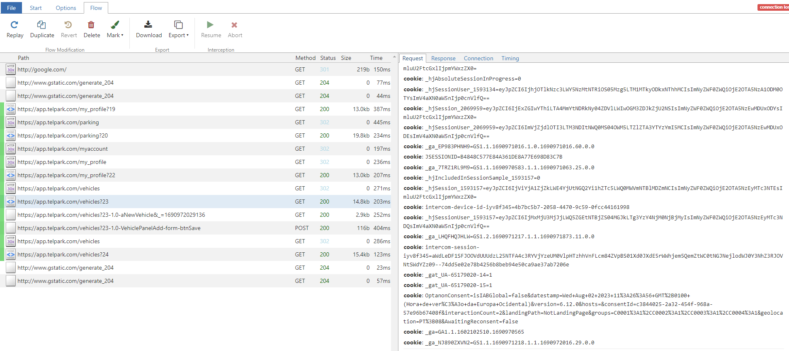
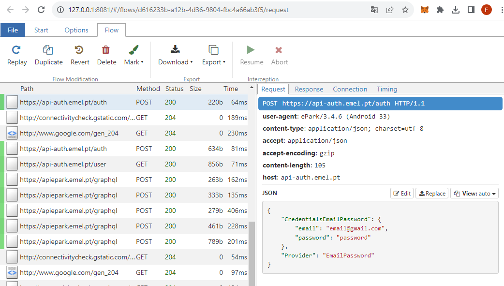
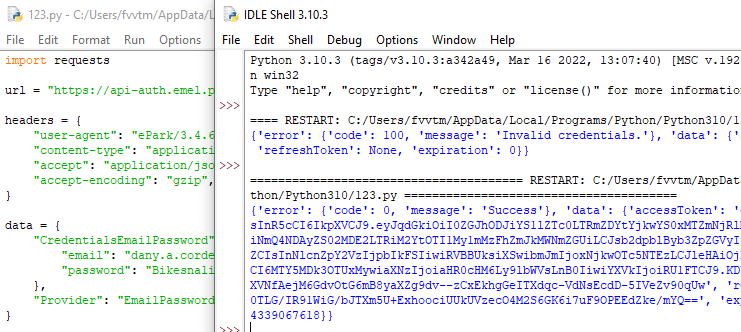

Since our meeting, I've been researching about the implementation of the in-app parking feature, and I've come to a few roadblocks. I'll be explaining each point of importance and detailing the results I've got:
No parking service application that distributes an API for developers to use. So you have to try and scrape their protocol on your own.
HTTPS is a method of encryption of the information of requests from a user to a server, or vice-versa. Considering this, to listen to requests between both parties, I had to use some 3rd party software to bypass these certificate.
I searched on forums and contacted a friend that is more into networks, and the recommendation I got was to download and setup mitmproxy, with mitmweb to analyse all incoming traffic from an Android emulator or the actual web browser.
#1 - Telpark
First, I tried to scrape these requests through Telpark, which has a web app, and considering that it's easier to spoof the SSL certificates in a normal PC than an Android Emulator, I thought it was the right choice, but it seems like they do something with their information before sending (or I just don't get it), as it's not clear.
And these requests were possible because I was already logged in. On Telpark's authentication process, they use HTST, which requires valid SSL certificates, so I couldn't even connect to the app if I was using mitmproxy.
#1 - ePark
When I tried with ePark, I was successful. It seems they don't even use HTTPS! I could grab my information on the requests sent, and check all the data sent to the app through their responses. In this example, shown in the pictures below, I authenticate my account and check my past parkings:
We can then make a small script that mimics these requests and send them without any interaction with the app, just sending my account details and getting a success messagen and user auth token:
The companies that built these parking service apps actually block any 3rd party use on their terms of service. It's very illegal to access these in any way shape or form that is not from their own products.
Via Verde
Terms of Service5.5. The Customer or User (when applicable) may not, in particular:
i. modify, decompile, transfer to another terminal or make the third parties access to the Application;5.6. The Client or User (when applicable) may not, within the scope of using the Application, practice any of the following acts, including:
i. access the Application through means other than those made available, or use forms modified software with the aim, in particular, of obtaining unauthorized access;Telpark
Terms of ServiceConsidering this, the only workaround (and the very best scenario) would be establishing a partnership with any of these companies (Telpark/Empark, EMEL or Via Verde) and actually integrate their private API into our application.